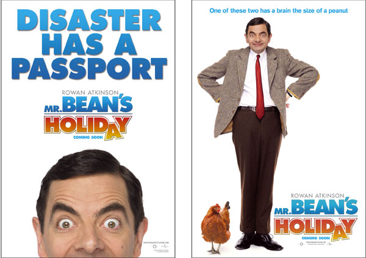
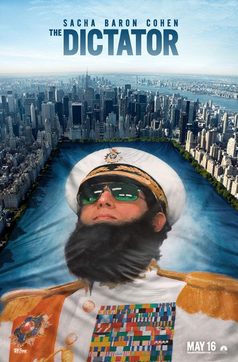
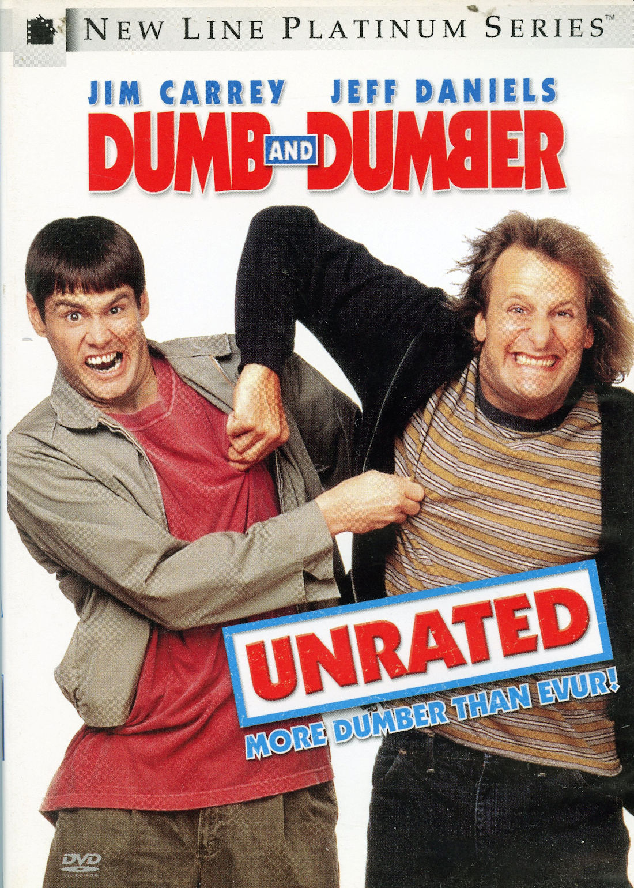
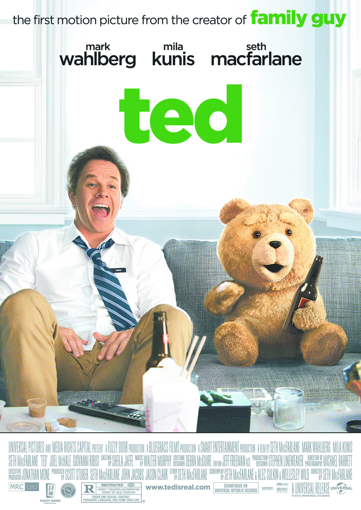
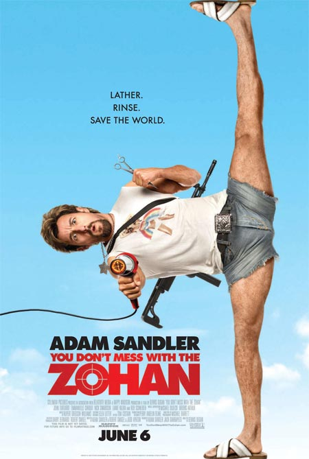
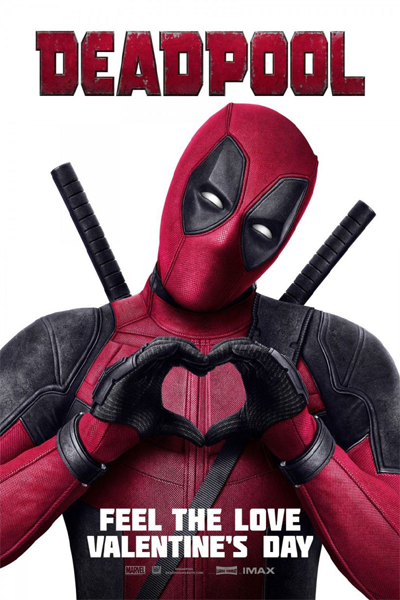
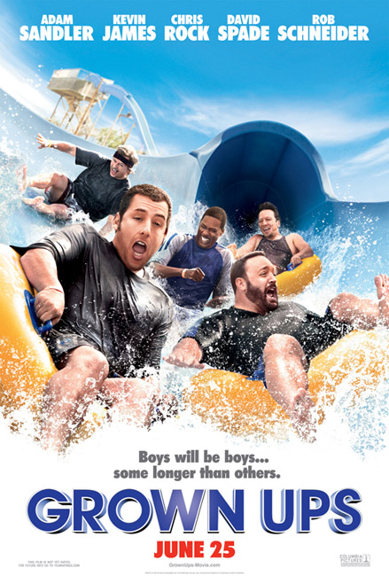

5.1: Mr. Bean's Holiday
Ratings : 🌟 6.4
Genre :ComedyFamily
Release Date : 24 August 2007
Watch-Time : 1h 30min.
Director : Steve Bendelack
Starring : Rowan Atkinson, Emma de Caunes, Max Baldry, Willem Dafoe
Box-Office : $232.2 million
Storyline:
Mr. Bean enters a church raffle and wins a vacation trip to France as well as a camcorder. After boarding a Eurostar train and arriving in Paris, the French language proves a barrier for Bean, as he struggles to get across the city to catch a train to the south of France from the Gare de Lyon. Taking time to order a meal, he finds the consumption of a seafood platter to be a challenge. Just before catching his train, he asks Emil, a Russian film director on his way to be a judge at the Cannes Film festival to use his camcorder to record his boarding, but accidentally causes Emil being left behind at the station. Bean attempts to cheer up the director's son Stepan as the train continues south but matters are made more hectic by the fact that Emil has reported his son to have been kidnapped and Bean losing his wallet and essential travel documents at a pay phone where he and Stepan attempt to contact Emil.
5.2: The Dictator
Ratings : 🌟 6.4
Genre : Comedy
Release Date : 16 May 2012
Watch-Time : 1h 23min.
Director : Larry Charles
Starring : Sacha Baron Cohen, Anna Faris, Ben Kingsley
Box-Office : $179 million
Storyline:
The Republic of Wadiya is ruled by an eccentric and oppressive leader named Hafez Aladeen. Aladeen is summoned to New York to a UN assembly to address concerns about his country's nuclear weapons program, but the trip goes awry.
4.1: Dumb and Dumber
Ratings : 🌟 7.3
Genre : Comedy
Release Date : 16 December 1994
Watch-Time : 1h 47min.
Director : Peter Farrelly, Bobby Farrelly
Starring : Jim Carrey, Jeff Daniels, Lauren Holly, Karen Duffy, Mike Starr, Charles Rocket, Teri Garr
Box-Office : $247.3 million
Storyline:
Harry and Lloyd are two good friends who happen to be really stupid. The duo set out on a cross country trip from Providence to Aspen, Colorado to return a briefcase full of money to its rightful owner, a beautiful woman named Mary Swanson. After a trip of one mishap after another, the duo eventually make it to Aspen. But the two soon realize that Mary and her briefcase are the least of their problems.
4.2: Ted
Ratings : 🌟 6.9
Genre : Comedy
Release Date : 29 June 2012
Watch-Time : 1h 46min.
Director : Seth MacFarlane
Starring : Mark Wahlberg, Mila Kunis, Seth MacFarlane, Joel McHale, Giovanni Ribisi
Box-Office : $549.4 million
Storyline:
John makes a Christmas miracle happen by bringing his one and only friend to life, his teddy bear. The two grow up together and John must then choose to stay with his girlfriend or keep his friendship with his crude and extremely inappropriate teddy bear, Ted.
3.1: 21 Jump Street

Ratings : 🌟 7.2
Genre : ActionComedyCrime
Release Date : 16 March 2012
Watch-Time : 1h 49min.
Director : Phil Lord, Christopher Miller
Starring : Jonah Hill, Channing Tatum, Brie Larson, Dave Franco, Rob Riggle, Ice Cube
Box-Office : $201.6 million
Storyline:
In 2005, Schmidt and Jenko are high school students, one an honor roll geek, the other a cool, athletic underachiever. By 2012, they are rookie cops, paired together, on bike patrol yearning to make arrests. After a screw up, they're sent undercover back to high school to find the source of a dangerous synthetic drug. They mix up their names, and Schmidt gets the no-brainer classes where he auditions for Peter Pan and falls in love with Wendy; Jenko gets AP classes where he falls in with high-achieving dweebs. This second chance at high school gives Schmidt delusions of grandeur, which threaten the operation. Can they sort out their relationship as they stumble onto the bad guys?
3.2: You Don't Mess with the Zohan
Ratings : 🌟 5.5
Genre : Comedy
Release Date : 6 June 2008
Watch-Time : 1h 53min.
Director : Dennis Dugan
Starring : Adam Sandler, John Turturro, Emmanuelle Chriqui, Nick Swardson, Lainie Kazan, Rob Schneider
Box-Office : $204.3 million
Storyline:
Harbouring an ardent desire to be the best in the cut-throat world of hairdressers, the Mossad's finest agent, Zohan, seizes the opportunity to call it quits by faking his death, after a fierce battle with his arch-nemesis, Phantom. In high hopes of making his dream come true in New York, the ambitious Zohan lands a job in the stylish hair salon of the beautiful Palestinian, Dalia, and things seem to work as planned; until a man from the past blows his cover. Now, the Zohan must fight tooth and nail to keep his new lifestyle, and in the meantime, try to win the heart of his boss. Can Zohan's dazzling hairstyling techniques save the world?
2.1: The Mask

Ratings : 🌟 7.0
Genre : ActionComedyCrime
Release Date : 29 July 1994
Watch-Time : 1h 41min
Director : Chuck Russell
Starring : Jim Carrey, Peter Riegert, Peter Greene, Amy Yasbeck, Richard Jeni, Cameron Diaz
Box-Office : $351.6 million
Storyline:
Timid bank clerk, Stanley Ipkiss (Jim Carrey). Unfortunately, he's too gentle, and is unable to handle confrontations. After one of the worst days, he finds a mask which depicts Loki, the Norse god of mischief. When he puts it on, he becomes his inner, self: a cartoon wild man. After Ipkiss's alter ego indirectly kills the friend of small time crime boss, Dorian Tyrel (Peter Greene),he wants the green-faced goon destroyed.
2.2: Deadpool
Ratings : 🌟 8.0
Genre : ActionAdventureComedy
Release Date : 12 February 2016
Watch-Time : 1h 48min .
Director : Tim Miller
Starring : Ryan Reynolds, Morena Baccarin, Ed Skrein, T.J.Miller, Gina Carano, Brianna Hildebrand
Box-Office : $782.6 million
Storyline:
This is the origin story of former Special Forces operative turned mercenary Wade Wilson, who after being subjected to a rogue experiment that leaves him with accelerated healing powers, adopts the alter ego Deadpool. Armed with his new abilities and a dark, twisted sense of humor, Deadpool hunts down the man who nearly destroyed his life.
1.1: Grown Ups
Ratings : 🌟 6.0
Genre : Comedy
Release Date : 25 June 2010
Watch-Time : 1h 42min.
Director : Dennis Dugan
Starring : Adam Sandler, Kevin James, Chris Rock, David Spade, Rob Schneider, Salma Hayek, Maria Bello, Maya Rudolph
Box-Office : $271.4 million
Storyline:
In 1978, five 12-year-olds win a CYO basketball championship. Thirty years later, they gather with their families for their coach's funeral and a weekend at a house on a lake where they used to party. By now, each is a grownup with problems and challenges: Marcus is alone and drinks too much. Rob, with three daughters he rarely sees, is always deeply in love until he turns on his next ex-wife. Eric is overweight and out of work. Kurt is a househusband, henpecked by wife and mother-in-law. Lenny is a successful Hollywood agent married to a fashion designer with three kids and his two sons take their privilege for granted. Can the outdoors help these grownups rediscover connections or is this chaos in the making?
1.2: The Hangover

Ratings : 🌟 7.7
Genre : Comedy
Release Date : 5 June 2009
Watch-Time : 1h 40min.
Director : Todd Phillips
Starring : Bradley Cooper, Ed Helms, Zach Galifianakis, Heather Graham, Justin Bartha, Jeffrey Tambor
Box-Office : $469.3 million
Storyline:
Angelenos Doug Billings and Tracy Garner are about to get married. Two days before the wedding, the four men in the wedding party - Doug, Doug's two best buddies Phil Wenneck and Stu Price, and Tracy's brother Alan Garner - hop into Tracy's father's beloved Mercedes convertible for a 24-hour stag party to Las Vegas. Phil, a married high school teacher, has the same maturity level as his students when he's with his pals. Stu, a dentist, is worried about everything, especially what his controlling girlfriend Melissa thinks. Because she disapproves of traditional male bonding rituals, Stu has to lie to her about the stag, he telling her that they are going on a wine tasting tour in the Napa Valley. Regardless, he intends on eventually marrying her, against the advice and wishes of his friends. And Alan seems to be unaware of what are considered the social graces of the western world.